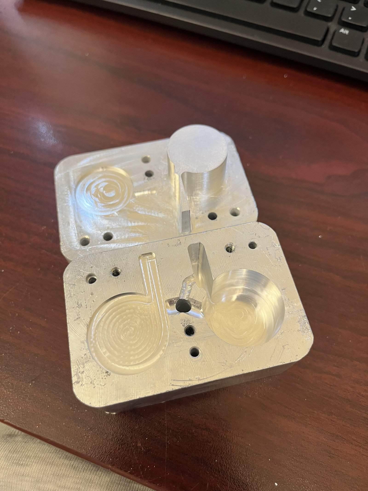
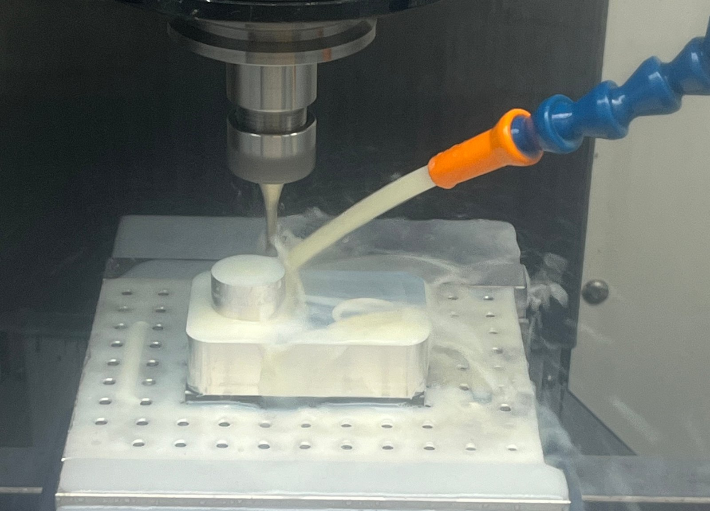
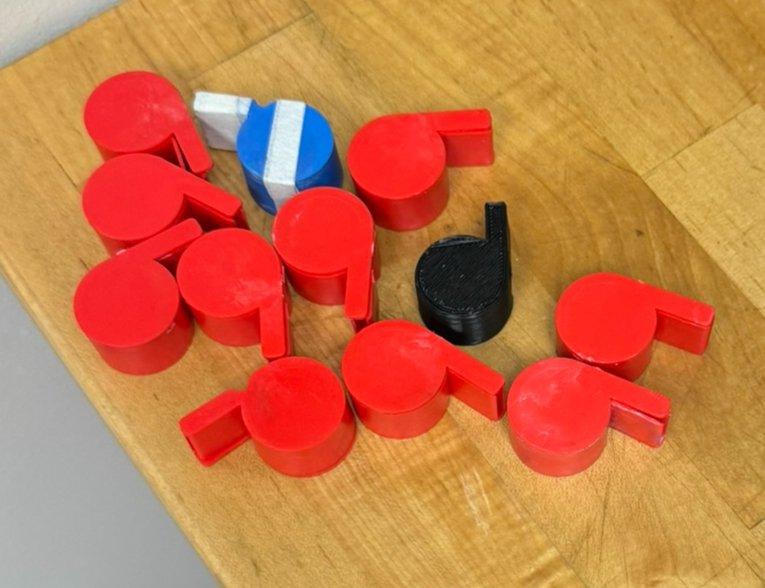
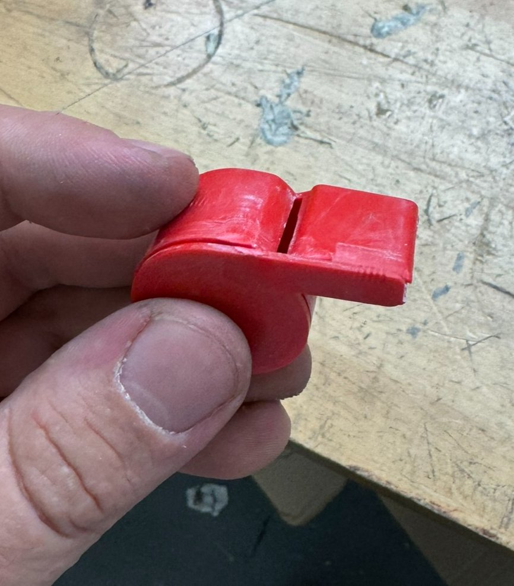

Precision Manufacturing, Sept 2024
Injection Mold
A two-part injection mold for a working whistle, designed around draft angles, parting-line strategy, and material shrinkage, then machined on a 3-axis CNC mill to GD&T.

Overview
Injection molding inverts the usual design problem: you don't design the part, you design the negative of the part, plus everything the process demands. The mold for this whistle had to account for draft angles on every vertical face, a parting line that wouldn't scar functional surfaces, and dimensional compensation for polymer shrinkage so the as-molded whistle actually plays.
For a whistle, the dimensions are functional rather than cosmetic: if the air channel or the edge that splits the airflow comes out of the mold at the wrong size, the part will not sound.


Execution
Working in a team of two, we modeled the cavity and core from the part geometry with shrink factors applied, planned toolpaths for 3-axis milling within GD&T tolerances, and machined the mold halves. The result is a production-style tool: loaded into a press, it produces a complete working whistle.
The finishing passes on the cavity matter most, because the plastic copies that surface exactly: any tool marks left in the cavity show up on every part. Draft lets each whistle release cleanly, and the shrink allowance brings the cooled part back to its design size.

